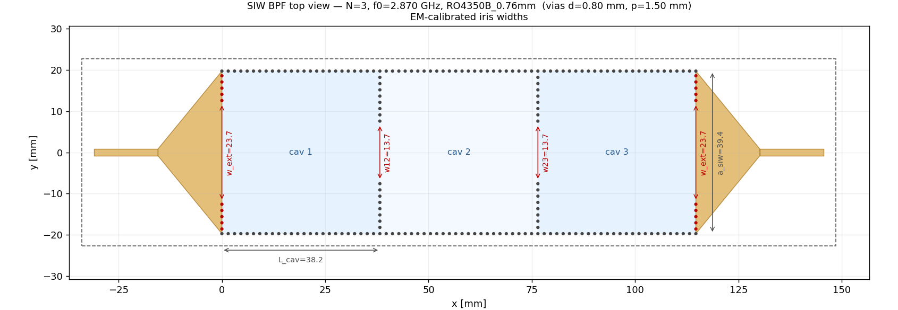
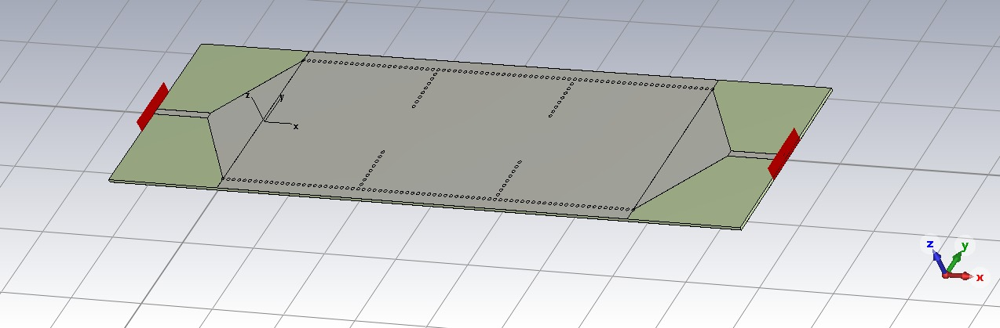
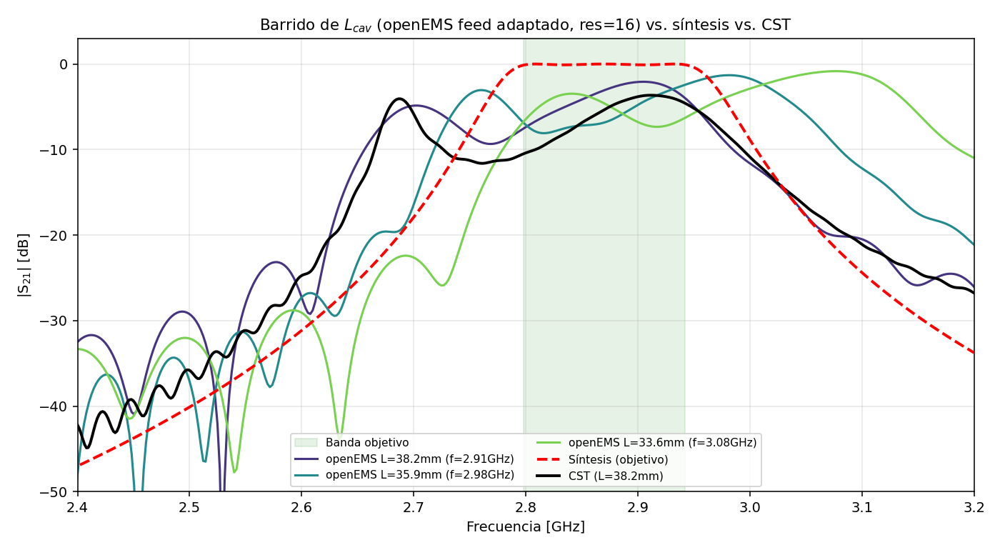
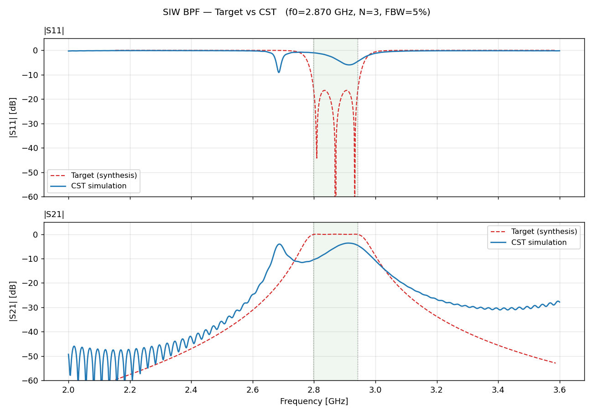
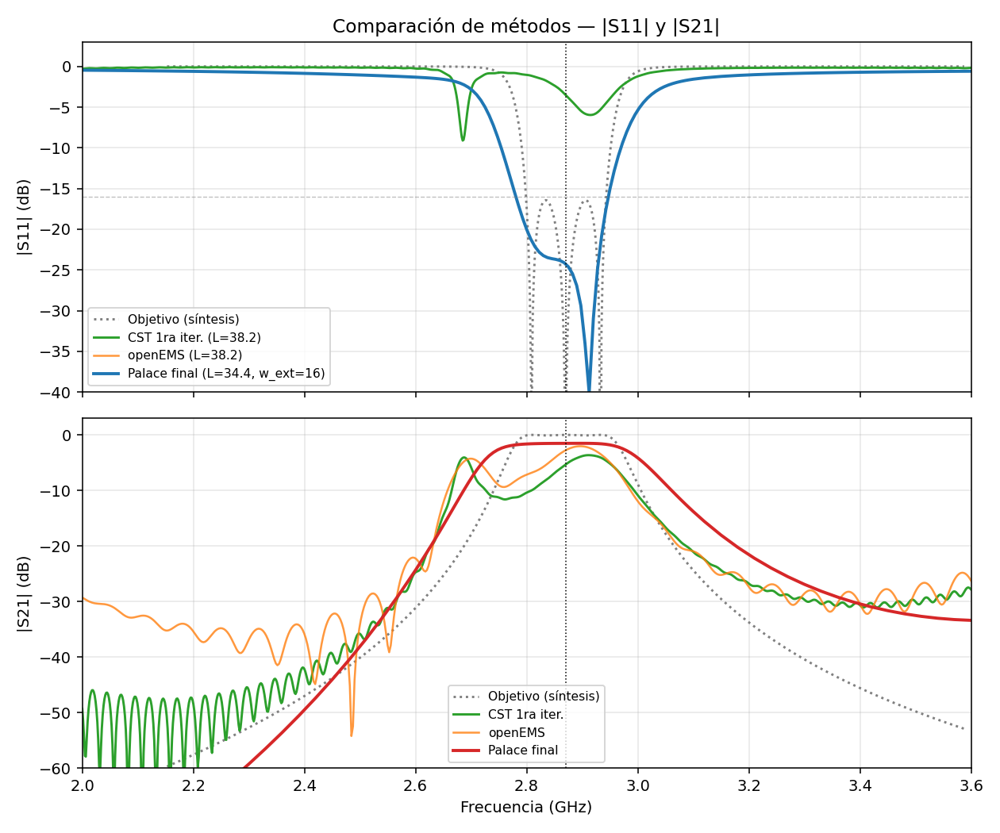
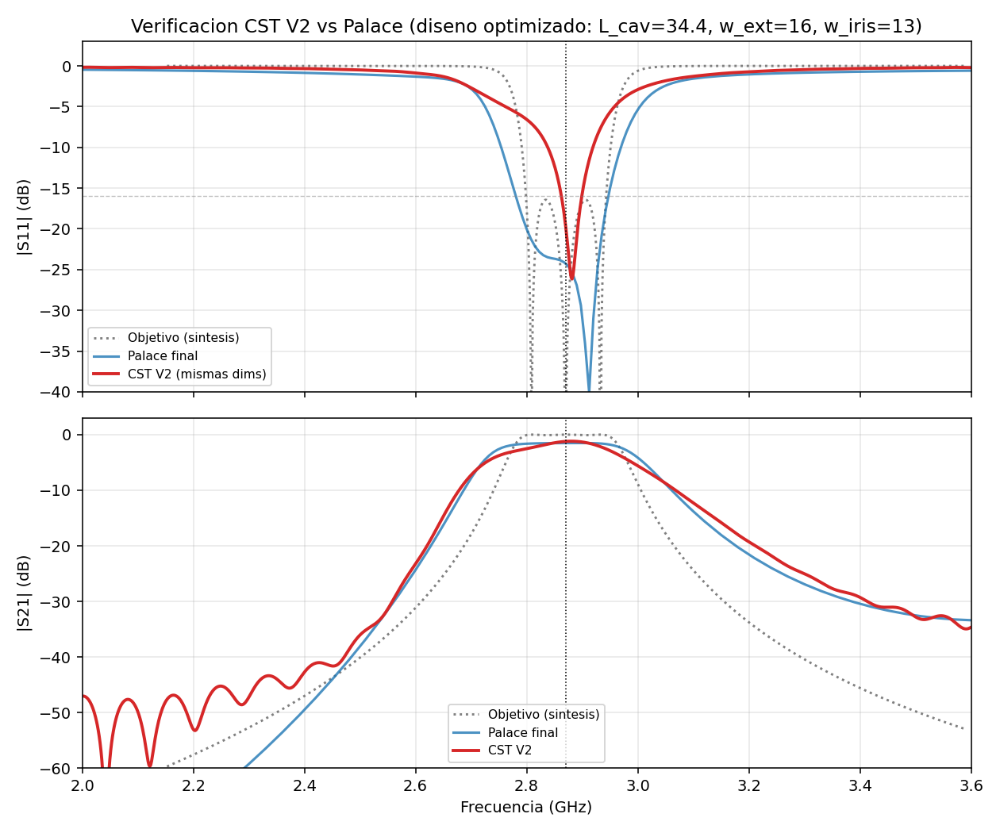
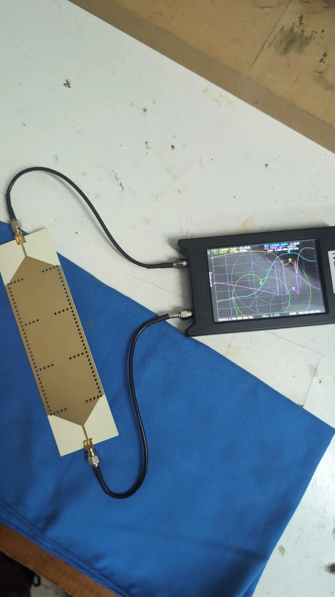
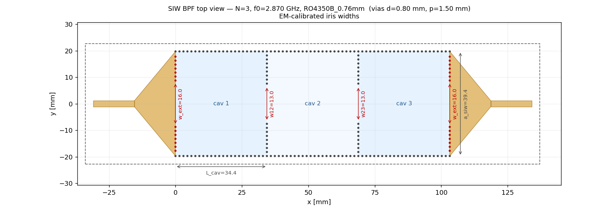

2026 · Medidas Electrónicas 2 · Microondas · SIW
Un filtro pasabanda en guía de onda integrada (SIW) a 2,87 GHz
Este es un proyecto que empecé hace poco, junto con dos compañeros, para la materia Medidas Electrónicas 2: diseñar y construir un filtro pasabanda centrado en 2,87 GHz (banda S) usando una tecnología que no había tocado antes, la guía de onda integrada en sustrato (Substrate Integrated Waveguide, o SIW). El informe final está en desarrollo; acá cuento lo que hicimos hasta ahora.
1. Qué es una SIW
2. El filtro que queremos
3. El primer diseño
4. Las herramientas gratuitas y sus límites
5. Optimizar con Palace
6. La verificación en CST
7. El prototipo
8. El diseño final
1. Qué es una SIW
Una guía de onda rectangular, la clásica de microondas, es un tubo metálico por donde viaja la señal. Funciona muy bien (poca pérdida, mucha potencia), pero es voluminosa y cara de fabricar. La SIW reproduce esa guía sobre una placa de circuito impreso: los planos de cobre de arriba y de abajo hacen de techo y piso, y dos filas de vías metalizadas hacen de paredes laterales. Así se combinan el bajo costo y la facilidad de fabricar un circuito plano con las ventajas de una guía de onda.
Usamos un laminado de microondas Rogers RO4350B de 0,76 mm, con vías de 0,8 mm de diámetro cada 1,5 mm.
2. El filtro que queremos
El filtro es de tres cavidades resonantes acopladas entre sí por iris inductivos (aberturas en las paredes de vías), con una respuesta de Chebyshev: una banda de paso con un 5 % de ancho de banda y un rizado de solo 0,1 dB. A partir de la teoría de síntesis de filtros se obtienen los valores de acoplamiento entre cavidades y del acoplamiento externo que la geometría tiene que reproducir. El resto del trabajo consiste en encontrar las dimensiones físicas que logran eso.
| Especificación | Valor |
|---|---|
| Frecuencia central | 2,87 GHz |
| Orden | 3 cavidades |
| Ancho de banda fraccional | 5 % |
| Rizado (Chebyshev) | 0,1 dB |
| Sustrato | Rogers RO4350B, 0,76 mm |
3. El primer diseño
Con fórmulas analíticas se calcularon el ancho de la guía, la separación entre filas de vías y la longitud de cada cavidad, usando la condición de resonancia del modo fundamental. Después se agregaron las transiciones cónicas que pasan de la línea microstrip de 50 Ω a la guía. Este fue el layout de la primera iteración:


4. Las herramientas gratuitas y sus límites
Para iterar rápido usamos simuladores gratuitos y de código abierto.
openEMS: bueno para el centro, malo para la adaptación
openEMS permitió barrer la longitud de la cavidad y ver cómo se mueve la banda. Con una alimentación microstrip adaptada, la longitud calculada a mano coincidía con el objetivo, tanto en openEMS como en CST. Pero tenía un límite serio: sus puertos no dan un S11 confiable para esta estructura (se obtuvieron valores sin sentido físico), así que servía para ubicar la banda, pero no para ajustar la adaptación.

Cuando el diseño llegó a CST, se deformó
Y acá apareció el problema: con esas dimensiones, la simulación completa en CST mostraba una respuesta distinta de la esperada. La banda era casi el doble de ancha que el objetivo (el acoplamiento externo estaba sobredimensionado), con pérdidas de inserción altas y una adaptación pobre.

| Objetivo | CST, primera iteración | |
|---|---|---|
| Frecuencia central | 2,870 GHz | 2,818 GHz |
| Ancho de banda (−3 dB) | 143 MHz | 293 MHz |
| Pérdida de retorno | > 16 dB | 1,02 dB |
Hacía falta una herramienta gratuita, pero confiable en la adaptación.
5. Optimizar con Palace
La solución fue Palace, un solver de código abierto de AWS que usa elementos finitos con puertos modales: el mismo tipo de puerto que usa CST. Antes de confiar en él, simulamos con Palace la geometría de la primera iteración y comparamos con CST: las dos respuestas coincidían. Con eso quedó validado como reemplazo de CST para el lazo de optimización.
Sobre esa base se agregó al diseño un iris de entrada y salida ajustable, que fija el acoplamiento externo, y se corrió una optimización automática de seis variables: las longitudes de cavidad, los iris internos y externos, y el alimentador. Un hallazgo del proceso: las cavidades reales tienen que ser más cortas que el valor analítico (unos 34,4 mm contra 38,2 mm), porque los tapers y los iris externos cargan las cavidades y les bajan la frecuencia de resonancia. El cálculo analítico, que supone paredes ideales, no captura esa carga.

6. La verificación en CST
El diseño optimizado se exportó a CST con una macro que reconstruye la geometría en un solo paso, y se simuló. El resultado: CST y Palace coinciden muy bien, lo que valida toda la cadena de diseño (síntesis, optimización con Palace, verificación en CST).

| Resultado en CST | Valor |
|---|---|
| Frecuencia central (−3 dB) | 2,858 GHz (a 12 MHz del objetivo) |
| Adaptación en el centro de la banda | S11 = −20,9 dB |
| Pérdida de inserción en el pico | 1,19 dB |
| Ancho de banda (−3 dB) | 234 MHz |
Dos detalles de la respuesta que tienen explicación. La pérdida de inserción de alrededor de 1 dB no se puede eliminar: es la pérdida del propio dieléctrico, que la teoría estima en un valor consistente con lo simulado. Y aparece una banda espuria cerca de los 4,5 GHz, que corresponde a modos de orden superior de las cavidades, algo inherente a los resonadores SIW y ajeno a la especificación.
7. El prototipo
Con el diseño listo, fabricamos la placa y la medimos con un analizador vectorial de redes: la placa conectada por sus dos conectores SMA al instrumento, que muestra en pantalla las curvas de reflexión y transmisión.

El informe final con las mediciones está en desarrollo, pero ya pudimos comprobar que la forma de la respuesta del filtro es similar a la que esperábamos de la simulación.
8. El diseño final
Estas son las dimensiones a las que llegó la optimización, comparadas con las del primer diseño analítico:
| Dimensión | Primera iteración | Final (Palace) |
|---|---|---|
| Longitud de cavidad | 38,23 mm | 34,40 mm |
| Iris internos (w12 = w23) | 13,66 mm | 13,00 mm |
| Iris externo | sin iris | 16,00 mm |
| Ancho de microstrip | 1,66 mm | 2,26 mm |
| Largo del taper | 15,46 mm | 15,46 mm |

El diseño final centra la banda en 2,87 GHz y logra S11 por debajo de −16 dB en la banda, con una pérdida de inserción de alrededor de 1,5 dB. Su ancho de banda (unos 277 MHz en Palace) es mayor que el nominal de 143 MHz: la optimización priorizó el centrado y la adaptación, que eran los objetivos críticos, aceptando una banda algo más ancha. Para estrecharla hacia el 5 % bastaría con reducir en conjunto los iris interno y externo, un ajuste fino que queda como refinamiento.
Qué sigue: terminar el informe con la caracterización del prototipo y, si hace falta, afinar el ancho de banda. Lo más valioso hasta ahora fue la lección de método: una herramienta rápida sirve para explorar, pero hay que validarla contra una de referencia antes de confiar en ella.